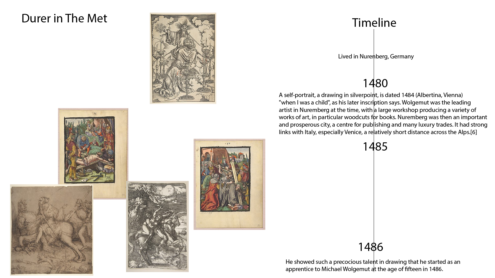

Dr. Suzanna Schmeelk - Met Visualizations
Albrecht Dürer @ the Met

This is a quantative sprint representing Albrecht Dürer's works in The Metropolitan Museum of Art in Manhattan, New York. The data visualization juxtaposes Dürer's life along with what pieces of his art are housed in The Met based on the object create date.
Düring German Renaissance @ the Met

This is a qualitative sprint representing works in The Metropolitan Museum of Art in Manhattan, New York, during the German Renaissance with the focus on Albrecht Dürer. The sprint juxtaposes Wikipedia data, along with The Met public domain images that transpire for the object create dates of Albrecht Dürer's works of art.
Dürer In the Met

This is an interactive story timeline for Albrecht Dürer with his artwork in The Metropolitan Museum of Art in Manhattan, New York. The sprint juxtaposes Dürer Wikipedia data, along with The Met public domain images that transpire for the object create dates of Albrecht Dürer's works of art in The Met. art board
{kind=link}
About Our Class at Parsons

PGDV 5200 Taught by Richard The (linkedin , website)
"Parsons' Master of Science in Data Visualization is a multidisciplinary program in which students develop skills bringing together visual design, computer science, statistical analysis, and ethical considerations of data analysis and representation. The presentation of data plays a critical role in the shaping of opinion, policy, and decision making in today's increasingly global society. Giving students a competitive edge as they enter the field, the MS program responds to the increased demand for experts who can turn data into insight. This program is part of Parsons' School of Art, Media, and Technology (AMT). Learn about the AMT community and explore our blog to see what students, faculty, and alumni are doing in NYC and around the world."